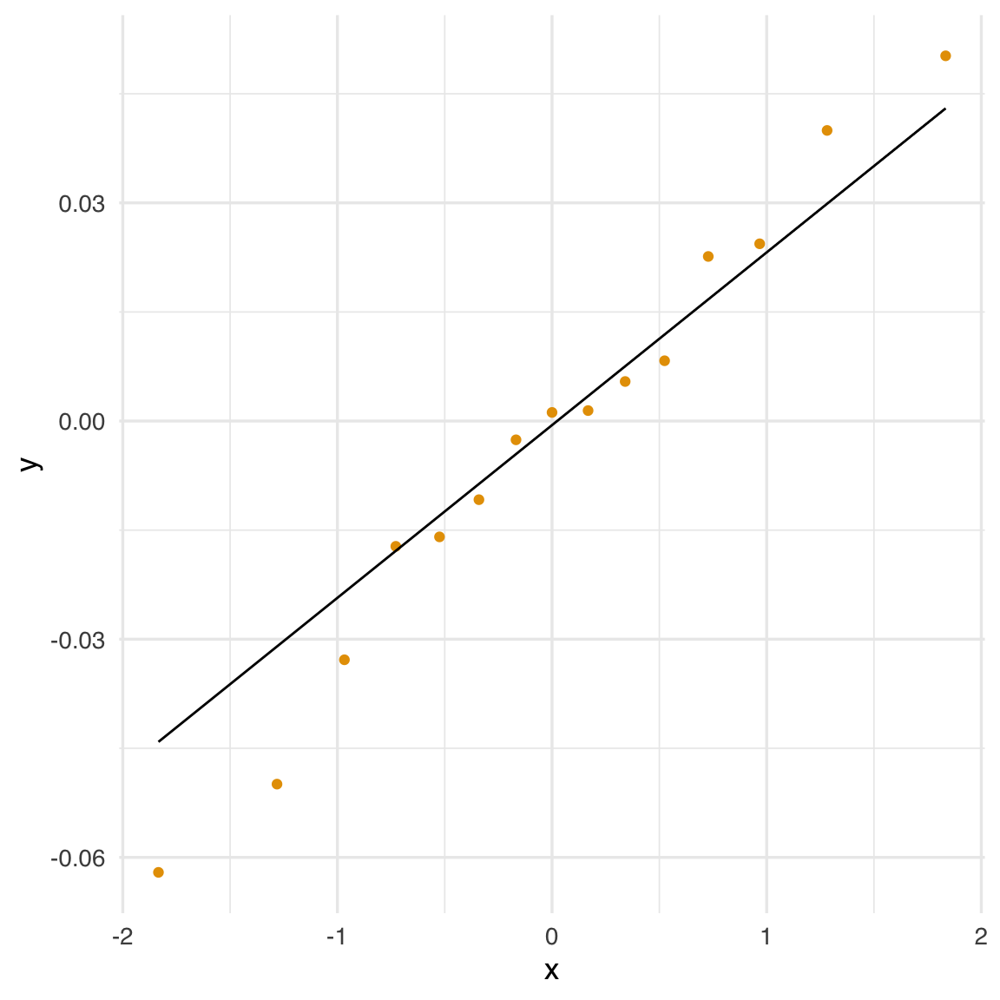

20 Il modello unifattoriale
Prerequisiti
- Leggere il capitolo 6, Factor Analysis and Principal Component Analysis, del testo Principles of psychological assessment di Petersen (2024).
Concetti e Competenze Chiave
- Correlazione parziale
- Teoria dei due fattori
- Annullamento della tetrade
Preparazione del Notebook
20.1 Introduzione
L’analisi fattoriale è una tecnica statistica che permette di spiegare le correlazioni tra variabili osservate attraverso la loro dipendenza da uno o più fattori latenti. In questo modello, le \(p\) variabili osservate (ad esempio, item di un questionario o indicatori comportamentali) sono considerate condizionalmente indipendenti, dato l’insieme di \(m\) fattori comuni non osservabili. L’obiettivo principale è interpretare tali fattori come costrutti teorici latenti sottostanti alle risposte osservate.
In un modello fattoriale, si dice che le variabili osservate \(y_1, y_2, \dots, y_p\) sono condizionalmente indipendenti dato il fattore latente \(\xi\) quando, una volta noto il valore di \(\xi\), la conoscenza di una qualunque delle variabili osservate non fornisce informazioni aggiuntive sulle altre. Formalmente, per ogni coppia \(i \neq j\) si ha:
\[ P(y_i, y_j \mid \xi) = P(y_i \mid \xi) \cdot P(y_j \mid \xi). \]
Questa proprietà implica che tutte le covarianze tra le variabili osservate sono spiegate esclusivamente dal fattore comune. In assenza di tale fattore, le variabili osservate risulterebbero tra loro incorrelate. L’indipendenza condizionale è una delle assunzioni centrali del modello fattoriale, e giustifica la possibilità di interpretare la covarianza tra item come effetto della loro dipendenza condivisa da un unico costrutto latente. Un esempio numerico è fornito nella Sezione 20.3.1.
Ad esempio, si può utilizzare l’analisi fattoriale per spiegare le correlazioni tra le prestazioni di un gruppo di individui in diversi compiti cognitivi attraverso un singolo fattore latente come l’intelligenza generale. In questo modo, l’analisi fattoriale consente di identificare i costrutti a cui gli item si riferiscono e di quantificare quanto ciascun item contribuisca a rappresentarli.
Il modello può prevedere uno (modello unifattoriale, \(m = 1\)) o più fattori latenti (modello multifattoriale, \(m > 1\)). In questo capitolo ci concentreremo sul modello unifattoriale, che assume l’esistenza di un unico fattore comune che influenza tutte le variabili osservate.
Nel contesto dell’analisi fattoriale, le variabili latenti rappresentano costrutti teorici non direttamente osservabili, come abilità cognitive o tratti psicologici. Queste variabili riflettono le comunanze sottostanti a un insieme di indicatori osservabili, chiamati variabili manifeste. Le prime sono rappresentate nei diagrammi di percorso come cerchi, mentre le seconde come quadrati.
Il legame tra fattore latente e variabili manifeste è descritto tramite i carichi fattoriali (\(\lambda\)), che quantificano l’intensità dell’influenza esercitata dal fattore latente su ciascuna variabile osservata. Il valore di \(\lambda\) indica la proporzione di varianza della variabile osservata che è spiegata dal fattore comune: più alto è il carico, maggiore è la rappresentatività dell’item rispetto al costrutto latente.
Dal punto di vista matematico, ciascuna misura osservabile \(y\) è modellata come una combinazione lineare del fattore latente \(\xi\), ponderato dal carico \(\lambda\), più un termine di errore specifico \(\delta\), che rappresenta la componente di varianza non spiegata dal fattore comune.
Un esempio intuitivo può chiarire il significato di questa decomposizione: immaginate di usare una bilancia imprecisa per misurare il peso corporeo. Ogni misurazione (\(y\)) rifletterà in parte il peso reale della persona (\(\xi\)), ma anche un errore casuale (\(\delta\)) dovuto all’inaffidabilità dello strumento.
Quando si dispone di più variabili osservabili \(y\) che fanno riferimento a un medesimo costrutto latente \(\xi\), diventa possibile stimare con maggiore precisione sia il punteggio latente sia la componente di errore. Questo consente di ottenere una rappresentazione più affidabile del costrutto teorico di interesse e di migliorare l’interpretazione psicometrica dei dati.
20.2 Modello monofattoriale
Nel caso di un solo fattore comune e \(p\) variabili manifeste \(y_i\), il modello assume la forma:
\[ \begin{equation} y_i = \mu_i + \lambda_{i} \xi + 1 \cdot \delta_i \qquad i = 1, \dots, p, \end{equation} \tag{20.1}\]
dove:
- \(\mu_i\) è la media della variabile osservata \(y_i\),
- \(\xi\) è il fattore latente comune a tutte le variabili osservate,
- \(\lambda_i\) è la saturazione fattoriale, ovvero il peso del fattore comune \(\xi\) sulla variabile \(y_i\),
- \(\delta_i\) è il fattore specifico (o errore unico) associato a \(y_i\), indipendente da \(\xi\).
Si assume che:
- il fattore comune \(\xi\) abbia media zero e varianza unitaria,
- i fattori specifici \(\delta_i\) abbiano media zero, varianza \(\psi_i\), e siano indipendenti tra loro e dal fattore comune.
In questo modello, ciascuna variabile osservata \(y_i\) è influenzata da una componente condivisa (\(\xi\)) e da una componente specifica (\(\delta_i\)), che rappresenta la parte di varianza unica della variabile non spiegata dal fattore comune.
Il modello di analisi fattoriale può ricordare formalmente il modello di regressione lineare, ma esistono alcune differenze fondamentali. Innanzitutto, sia il fattore comune \(\xi\) sia i fattori specifici \(\delta_i\) sono variabili latenti, cioè non osservabili direttamente. Di conseguenza, tutti i termini presenti nel lato destro dell’equazione sono incogniti. Inoltre, i due modelli perseguono obiettivi differenti: la regressione lineare mira a identificare variabili indipendenti osservabili che spiegano la varianza di una variabile dipendente, mentre l’analisi fattoriale cerca di individuare una o più variabili latenti che rendano conto della covarianza tra un insieme di variabili osservate.
Per semplicità, si assume spesso che le variabili osservate siano centrate, cioè che la loro media sia pari a zero (\(\mu_i = 0\)). Questo equivale a considerare ogni \(y_i\) come uno scarto rispetto alla propria media. Il modello unifattoriale può quindi essere riscritto nella forma:
\[ \begin{equation} y_i - \mu_i = \lambda_i \xi + 1 \cdot \delta_i, \end{equation} \tag{20.2}\]
dove:
- \(\lambda_i\) è la saturazione (o carico) fattoriale della variabile \(y_i\) sul fattore comune \(\xi\),
- \(\delta_i\) rappresenta la componente specifica della variabile \(y_i\), ovvero la parte di varianza non condivisa con le altre variabili.
Si assume che:
- il fattore comune \(\xi\) abbia media zero e varianza unitaria (\(\mathbb{E}[\xi] = 0\), \(\mathrm{Var}(\xi) = 1\)),
- ciascun fattore specifico \(\delta_i\) abbia media zero, varianza \(\psi_i\) e sia incorrelato con \(\xi\) e con gli altri \(\delta_j\) (per \(j \ne i\)).
Sotto queste assunzioni, l’interdipendenza tra le variabili osservate è interamente spiegata dalla loro dipendenza dal fattore comune. I fattori specifici, invece, rendono conto della varianza residua non condivisa.
Questa formulazione permette di derivare espressioni analitiche per quantità fondamentali come:
- la covarianza tra una variabile osservata \(y_i\) e il fattore comune \(\xi\),
- la varianza della variabile osservata \(y_i\),
- la covarianza tra due variabili osservate \(y_i\) e \(y_k\).
L’obiettivo di questo capitolo è analizzare nel dettaglio tali quantità e mostrare come esse riflettano la struttura latente imposta dal modello unifattoriale.
20.3 Correlazione parziale
Prima di introdurre formalmente il modello statistico dell’analisi fattoriale, è utile chiarire il concetto di correlazione parziale, centrale per comprendere la logica della separazione tra fattori comuni e specifici.
L’analisi fattoriale è spesso fatta risalire agli studi di Charles Spearman. Nel 1904, Spearman pubblicò un articolo intitolato “General Intelligence, Objectively Determined and Measured”, nel quale propose la Teoria dei Due Fattori. In quel lavoro, mostrò che era possibile identificare un fattore latente a partire da una matrice di correlazioni osservate, utilizzando la tecnica dell’annullamento della tetrade (tetrad differences). Questa tecnica si basa sul principio della correlazione parziale e mira a verificare se, una volta controllati gli effetti di variabili latenti (i fattori \(\xi_j\)), le correlazioni tra le variabili osservate \(Y_i\) risultino nulle.
Per illustrare il concetto, consideriamo un esempio con tre variabili: \(Y_1\), \(Y_2\) e una variabile comune \(F\). La correlazione semplice \(r_{12}\) tra \(Y_1\) e \(Y_2\) può riflettere l’influenza condivisa di \(F\) su entrambe. La correlazione parziale tra \(Y_1\) e \(Y_2\) al netto di \(F\) misura invece la relazione diretta tra \(Y_1\) e \(Y_2\) una volta rimosso l’effetto lineare di \(F\) da entrambe le variabili.
Per farlo, si calcolano i residui delle regressioni di \(Y_1\) e \(Y_2\) su \(F\), ovvero le componenti ortogonali a \(F\). Ad esempio, nel caso di \(Y_1\):
\[ Y_1 = b_{01} + b_{11}F + E_1, \tag{20.3}\]
dove \(E_1\) è la parte di \(Y_1\) linearmente indipendente da \(F\). Ripetendo l’operazione per \(Y_2\) si ottiene un residuo \(E_2\), anch’esso ortogonale a \(F\). La correlazione di Pearson tra \(E_1\) ed \(E_2\) rappresenta la correlazione parziale tra \(Y_1\) e \(Y_2\) dato \(F\).
La stessa quantità può essere calcolata direttamente a partire dalle correlazioni semplici tra le tre variabili, tramite la formula:
\[ \begin{equation} r_{1,2 \mid F} = \frac{r_{12} - r_{1F}r_{2F}}{\sqrt{(1-r_{1F}^2)(1-r_{2F}^2)}}. \end{equation} \tag{20.4}\]
Questa formula mostra che la correlazione parziale è ottenuta sottraendo al valore osservato di \(r_{12}\) il prodotto delle correlazioni tra \(Y_1\) e \(F\) e tra \(Y_2\) e \(F\), e normalizzando per la varianza residua non spiegata da \(F\).
20.3.1 Esempio numerico
Supponiamo di avere una variabile \(f\) generata da una distribuzione normale:
Costruiamo due variabili, \(y_1\) e \(y_2\), come combinazioni lineari di \(f\) più un errore casuale:
Le tre variabili sono correlate; in particolare \(y_1\) e \(y_2\) hanno una correlazione semplice \(r_{12} = 0.380\):
Per calcolare la correlazione parziale tra \(y_1\) e \(y_2\) al netto di \(f\), eseguiamo due modelli di regressione lineare:
Ogni osservazione viene così scomposta in due componenti: i valori adattati \(\hat{y}_i\) (dipendenti da \(f\)) e i residui \(e_i\) (indipendenti da \(f\)):
La correlazione parziale tra \(y_1\) e \(y_2\) è quindi calcolabile come la correlazione tra i residui:
cor(fm1$res, fm2$res)
#> [1] 0.02829Nel nostro esempio, la correlazione parziale tra \(y_1\) e \(y_2\) al netto di \(f\) è \(r_{12|f} = 0.028\), praticamente nulla. Questo indica che la correlazione osservata tra \(y_1\) e \(y_2\) (\(r = 0.380\)) era dovuta esclusivamente all’influenza condivisa di \(f\) su entrambe.
In altre parole, una volta eliminato l’effetto di \(f\), non rimane alcuna associazione lineare diretta tra \(y_1\) e \(y_2\). Le due variabili sono quindi condizionalmente indipendenti dato \(f\): le componenti di \(y_1\) e \(y_2\) non spiegate da \(f\) risultano tra loro incorrelate.
Infine, possiamo verificare che il valore ottenuto con la formula della correlazione parziale coincide con quello calcolato sui residui:
Il risultato conferma la coerenza tra il calcolo algebrico e il metodo dei residui. Questo esempio evidenzia come la correlazione parziale sia uno strumento fondamentale per isolare le relazioni dirette tra variabili, rimuovendo l’influenza di fattori comuni non osservabili.
20.4 Principio base dell’analisi fattoriale
Oggi, l’inferenza statistica in ambito fattoriale si basa prevalentemente su metodi di stima per massima verosimiglianza, ottenuti attraverso procedure iterative. Tuttavia, nelle fasi iniziali dello sviluppo dell’analisi fattoriale, l’estrazione dei fattori si fondava su proprietà invarianti che il modello fattoriale impone alla matrice di covarianza (o di correlazione) delle variabili osservate. Tra queste proprietà, la più nota è quella dell’annullamento della tetrade, caratteristica distintiva dei modelli a un solo fattore.
Una tetrade è una combinazione lineare di quattro correlazioni tra variabili osservate. Se le correlazioni tra le variabili possono essere spiegate da un singolo fattore latente comune, allora è possibile costruire combinazioni di correlazioni la cui differenza si annulla. In altri termini, il modello a un fattore impone vincoli strutturali tali da rendere nulle alcune espressioni algebriche (le tetradi), che dipendono unicamente dalla matrice di correlazione.
L’analisi fattoriale può dunque essere formulata come un problema di ricerca di un insieme ristretto di variabili latenti (\(m < p\)), tali che, una volta controllato il loro effetto, tutte le correlazioni parziali tra le variabili osservate \(y_i\) risultino nulle. Se l’annullamento delle correlazioni parziali è confermato, lo psicologo può concludere che esistono \(m\) fattori latenti capaci di spiegare la struttura di covarianza del sistema osservato.
Per chiarire il principio, consideriamo la seguente matrice di correlazione, costruita in modo da riflettere un modello con un unico fattore latente \(\xi\):
| \(\xi\) | \(y_1\) | \(y_2\) | \(y_3\) | \(y_4\) | \(y_5\) | |
|---|---|---|---|---|---|---|
| \(\xi\) | 1.00 | |||||
| \(y_1\) | 0.90 | 1.00 | ||||
| \(y_2\) | 0.80 | 0.72 | 1.00 | |||
| \(y_3\) | 0.70 | 0.63 | 0.56 | 1.00 | ||
| \(y_4\) | 0.60 | 0.54 | 0.48 | 0.42 | 1.00 | |
| \(y_5\) | 0.50 | 0.45 | 0.40 | 0.35 | 0.30 | 1.00 |
In questa matrice, ogni variabile \(y_i\) ha una correlazione positiva con \(\xi\), e le correlazioni tra le \(y_i\) sono coerenti con un modello in cui \(\xi\) agisce come unica fonte comune di covarianza. Per esempio, la correlazione parziale tra \(y_3\) e \(y_5\) al netto di \(\xi\) risulta:
\[ \begin{align} r_{35 \mid \xi} &= \frac{r_{35} - r_{3\xi}r_{5\xi}}{\sqrt{(1-r_{3\xi}^2)(1-r_{5\xi}^2)}} \notag \\[12pt] &= \frac{0.35 - 0.7 \times 0.5}{\sqrt{(1 - 0.7^2)(1 - 0.5^2)}} = 0. \notag \end{align} \]
Lo stesso vale per qualunque altra coppia di variabili: tutte le correlazioni parziali condizionate a \(\xi\) sono nulle, cioè \(r_{ij \mid \xi} = 0\) per ogni \(i \ne j\).
In questa matrice, ci sono \(p(p-1)/2 = 5(5-1)/2 = 10\) correlazioni tra le variabili osservate, tutte spiegate dal singolo fattore \(\xi\). Questo non sorprende, poiché la matrice è stata costruita appositamente per rispettare questa proprietà.
Tuttavia, immaginiamo ora di trovarci in una situazione reale, in cui osserviamo soltanto le variabili \(y_1, \dots, y_5\), ma non abbiamo accesso diretto a \(\xi\). Possiamo allora porci la seguente domanda: esiste una variabile latente \(\xi\) tale che, se ne controllassimo l’effetto, tutte le correlazioni parziali tra le variabili osservate risulterebbero nulle?
Se una tale variabile esiste, e riesce a spiegare completamente le interdipendenze osservate tra le \(y_i\), essa assume lo status di fattore.
Definizione 20.1 Un fattore è una variabile latente non osservabile che, una volta controllata, rende significativamente nulle tutte le correlazioni parziali tra le variabili manifeste.
20.5 Vincoli sulle correlazioni
Come possiamo determinare se esiste una variabile latente \(\xi\) in grado di spiegare tutte le correlazioni osservate tra le variabili manifeste, rendendo nulle le loro correlazioni parziali? Possiamo partire dalla formula della correlazione parziale, già introdotta in precedenza (vedi Equazione 20.4), e riscriverla per esprimere la correlazione parziale tra due variabili osservate \(y_i\) e \(y_j\) condizionata a \(\xi\):
\[ \begin{align} r_{ij \mid \xi} = \frac{r_{ij} - r_{i\xi} \, r_{j\xi}}{\sqrt{(1 - r_{i\xi}^2)(1 - r_{j\xi}^2)}}. \end{align} \]
Affinché la correlazione parziale \(r_{ij \mid \xi}\) sia uguale a zero — cioè affinché \(y_i\) e \(y_j\) risultino condizionalmente indipendenti dato \(\xi\) — il numeratore della frazione deve annullarsi. Questa condizione si traduce nella seguente equazione:
\[ r_{ij} = r_{i\xi} \cdot r_{j\xi}. \tag{20.5}\]
In altri termini, la correlazione tra ogni coppia di variabili osservate deve essere pari al prodotto delle correlazioni tra ciascuna variabile e il fattore comune \(\xi\). Questa relazione vincola la struttura della matrice di correlazione osservata e costituisce una delle implicazioni fondamentali del modello fattoriale unifattoriale.
Il principio è il seguente: se un unico fattore latente \(\xi\) è in grado di spiegare tutte le correlazioni tra le variabili osservate \(y_i\), allora ciascuna correlazione \(r_{ij}\) deve poter essere scritta come il prodotto \(r_{i\xi} \cdot r_{j\xi}\).
Questa condizione è il cuore del modello fattoriale a un fattore: tutte le interdipendenze tra le variabili manifeste sono attribuibili alla loro relazione con una variabile latente comune. Se la struttura delle correlazioni osservate viola questa condizione, il modello a un fattore non è compatibile con i dati, e sarà necessario considerare un modello con due o più fattori.
Dal punto di vista pratico, questo principio può essere utilizzato per valutare se una matrice di correlazione è compatibile con un modello fattoriale semplice. Ad esempio, per ogni terna di variabili si possono calcolare differenze di tetradi, cioè differenze tra prodotti incrociati di correlazioni. Se tali differenze risultano sistematicamente prossime a zero, ciò suggerisce che la struttura osservata potrebbe essere spiegata da un unico fattore comune.
Nei prossimi paragrafi analizzeremo in dettaglio la procedura per stimare formalmente le relazioni tra fattori e variabili manifeste.
20.6 Teoria dei Due Fattori
Per illustrare in modo concreto il principio dell’annullamento della tetrade, consideriamo un esempio tratto dallo studio originale di Spearman (1904). In uno dei suoi primi lavori, Spearman raccolse una serie di misurazioni delle capacità intellettive su un campione di studenti, includendo sia prestazioni scolastiche sia abilità percettive.
Le sei variabili considerate furono:
- Classics: rendimento nello studio dei classici;
- French: rendimento in lingua francese;
- English: rendimento in letteratura inglese;
- Math: rendimento in matematica;
- Pitch: abilità nella discriminazione dell’altezza dei suoni;
- Music: competenza musicale.
Per semplicità, nella discussione seguente considereremo solo tre materie scolastiche (studi classici, \(c\), letteratura inglese, \(e\), e matematica, \(m\)) e la discriminazione dell’altezza dei suoni, \(p\). Nel suo studio, Spearman riportò le seguenti correlazioni:
\[ \begin{array}{ccccc} \hline & y_c & y_e & y_m & y_p \\ \hline y_c & 1.00 & 0.78 & 0.70 & 0.66 \\ y_e & & 1.00 & 0.64 & 0.54 \\ y_m & & & 1.00 & 0.45 \\ y_p & & & & 1.00 \\ \hline \end{array} \]
Secondo la Teoria dei Due Fattori, proposta da Spearman, ogni prestazione intellettiva può essere scomposta in due componenti:
- un fattore generale (g), comune a tutti i compiti cognitivi;
- un fattore specifico (s), unico per ciascun compito.
Il fattore \(g\) rappresenta la componente stabile e condivisa dell’intelligenza, mentre ciascun fattore \(s\) spiega la varianza residua specifica della singola prova. La domanda centrale è: esiste un’unica variabile latente in grado di spiegare le covarianze osservate tra le variabili manifeste?
Per rispondere, Spearman utilizzò il metodo dell’annullamento della tetrade, che si basa sulle implicazioni della correlazione parziale. Abbiamo visto in precedenza che, se una variabile latente \(\xi\) è in grado di rendere nulle le correlazioni parziali tra le variabili osservate, allora:
\[ r_{ij} = r_{i\xi} \cdot r_{j\xi}. \]
Nel contesto dei dati di Spearman, ciò significa ad esempio che la correlazione osservata tra “studi classici” (\(c\)) e “letteratura inglese” (\(e\)) deve essere uguale al prodotto delle loro correlazioni con il fattore comune \(\xi\): \(r_{ec} = \lambda_e \cdot \lambda_c\). Lo stesso vale per tutte le altre coppie di variabili.
Le correlazioni tra le variabili manifeste e il fattore latente sono chiamate saturazioni fattoriali e vengono denotate con \(\lambda\). Il vincolo fondamentale del modello fattoriale è che ogni correlazione osservata può essere scomposta come prodotto di due saturazioni.
20.7 Annullamento della tetrade
Il metodo dell’annullamento della tetrade si basa sull’assunto centrale del modello fattoriale unifattoriale: se un singolo fattore comune spiega tutte le covarianze tra le variabili osservate, allora la correlazione tra ciascuna coppia di variabili può essere espressa come il prodotto delle loro saturazioni fattoriali:
\[ r_{ij} = \lambda_i \cdot \lambda_j. \]
Questa relazione consente di tradurre le correlazioni osservate in un sistema di equazioni non lineari, in cui le incognite sono le saturazioni fattoriali \(\lambda_i\).
Ad esempio, se consideriamo tre variabili — ad esempio Classics (\(c\)), Math (\(m\)) e English (\(e\)) — e assumiamo che siano tutte influenzate dallo stesso fattore latente \(\xi\), possiamo scrivere:
\[ \begin{align} r_{cm} &= \lambda_c \cdot \lambda_m, \notag \\ r_{em} &= \lambda_e \cdot \lambda_m, \\ r_{ce} &= \lambda_c \cdot \lambda_e. \notag \end{align} \]
Risolvendo questo sistema di equazioni, otteniamo un’espressione per ciascuna saturazione in funzione delle sole correlazioni osservate. Ad esempio, isolando \(\lambda_m\):
\[ \lambda_m = \sqrt{ \frac{r_{cm} \cdot r_{em}}{r_{ce}} }. \tag{20.6}\]
Questa equazione mostra come si possa stimare il contributo di una variabile al fattore latente partendo esclusivamente dalle correlazioni empiriche tra le variabili osservate.
20.7.1 Esempio con i Dati di Spearman
Utilizzando i dati riportati da Spearman nel 1904, e in particolare le variabili Classics, Math ed English, abbiamo:
\[ r_{cm} = 0.70, \quad r_{em} = 0.64, \quad r_{ce} = 0.78. \]
Sostituendo nella formula:
\[ \hat{\lambda}_{\text{Math}} = \sqrt{ \frac{0.70 \cdot 0.64}{0.78} } = \sqrt{0.5733} \approx 0.76. \]
Questo risultato rappresenta la saturazione stimata della variabile Math nel fattore comune latente \(\xi\).
Il principio dell’annullamento della tetrade fornisce quindi un ponte diretto tra le correlazioni osservate e la struttura latente sottostante, assumendo che un singolo fattore sia responsabile delle covarianze tra le variabili.
20.8 Verifica del modello
Ripetendo il procedimento per diverse terne di variabili osservate, è possibile ottenere stime multiple per la stessa saturazione fattoriale. Nel caso dei dati di Spearman, ad esempio, la saturazione \(\lambda_m\) relativa alla variabile Math può essere stimata in almeno tre modi diversi, utilizzando combinazioni alternative di variabili:
\[ \begin{align} \hat{\lambda}_m &= \sqrt{ \frac{0.70 \cdot 0.64}{0.78} } = 0.76, \notag \\ \hat{\lambda}_m &= \sqrt{ \frac{0.78 \cdot 0.45}{0.66} } = 0.69, \notag \\ \hat{\lambda}_m &= \sqrt{ \frac{0.64 \cdot 0.45}{0.54} } = 0.73. \notag \end{align} \]
Questa molteplicità di stime evidenzia un aspetto fondamentale del modello fattoriale unifattoriale: se il modello è corretto, ossia se un unico fattore comune spiega le correlazioni tra tutte le variabili, allora tutte le stime ottenute devono essere coerenti tra loro, entro un margine di errore accettabile. Se, al contrario, le stime risultano incoerenti o divergenti, ciò suggerisce che il modello a un solo fattore non è compatibile con i dati.
In altri termini, il modello di Spearman è verificabile empiricamente: è possibile confrontare le previsioni del modello (in termini di relazioni tra saturazioni e correlazioni osservate) con i dati raccolti. Sebbene Spearman non abbia formalizzato un test statistico per valutare la bontà del modello, ha introdotto un principio centrale nell’analisi fattoriale moderna: non tutte le matrici di correlazione giustificano l’ipotesi dell’esistenza di un unico fattore latente.
20.9 Metodo del centroide
Una volta accettata l’ipotesi che le stime multiple siano sufficientemente simili, ci si può chiedere come ottenere un’unica stima sintetica per ciascuna saturazione.
Un primo approccio consiste semplicemente nel calcolare la media aritmetica delle stime ottenute:
\[ \bar{\lambda}_m = \frac{0.76 + 0.69 + 0.73}{3} \approx 0.73. \]
Un’alternativa più robusta è rappresentata dal metodo del centroide, che consiste nel calcolare una media pesata dei prodotti numeratori e dei denominatori coinvolti nelle diverse stime:
\[ \hat{\lambda}_m = \sqrt{ \frac{0.70 \cdot 0.64 + 0.78 \cdot 0.45 + 0.64 \cdot 0.45}{0.78 + 0.66 + 0.54} } = \sqrt{ \frac{1.031}{1.98} } \approx 0.73. \]
In questo caso, entrambi i metodi producono un risultato identico. Applicando lo stesso procedimento alle altre variabili, otteniamo:
\[ \hat{\lambda}_c = 0.97, \quad \hat{\lambda}_e = 0.84, \quad \hat{\lambda}_p = 0.65, \]
e quindi il vettore delle saturazioni fattoriali stimate è:
\[ \boldsymbol{\hat{\Lambda}}' = (\hat{\lambda}_c, \hat{\lambda}_e, \hat{\lambda}_m, \hat{\lambda}_p) = (0.97, 0.84, 0.73, 0.65). \]
In sintesi, l’esempio tratto dai dati di Spearman mostra come, a partire da una semplice matrice di correlazione tra variabili osservate, sia possibile ricostruire una struttura latente assumendo l’esistenza di un unico fattore comune. Il metodo dell’annullamento della tetrade fornisce sia un criterio per verificare la coerenza del modello, sia una procedura per stimare le saturazioni fattoriali.
Sebbene oggi l’analisi fattoriale si avvalga di metodi più avanzati, come la stima per massima verosimiglianza o i modelli bayesiani, il principio introdotto da Spearman conserva tutta la sua rilevanza: la covarianza tra variabili osservate può essere interpretata come riflesso di costrutti latenti condivisi. È proprio questo passaggio — dal livello osservabile al livello teorico — che rende l’analisi fattoriale uno strumento fondamentale per la psicometria e le scienze psicologiche.
20.10 Introduzione a lavaan
Attualmente, l’analisi fattoriale viene svolta mediante software. Il pacchetto R più ampiamente utilizzato per condurre l’analisi fattoriale è lavaan.
20.10.1 Sintassi del modello
Al cuore del pacchetto lavaan si trova la “sintassi del modello”. La sintassi del modello è una descrizione del modello da stimare. In questa sezione, spieghiamo brevemente gli elementi della sintassi del modello lavaan.
Nell’ambiente R, una formula di regressione ha la seguente forma:
y ~ x1 + x2 + x3 + x4In questa formula, la tilde (“~”) è l’operatore di regressione. Sul lato sinistro dell’operatore, abbiamo la variabile dipendente (y), e sul lato destro abbiamo le variabili indipendenti, separate dall’operatore “+” . In lavaan, un modello tipico è semplicemente un insieme (o sistema) di formule di regressione, in cui alcune variabili (che iniziano con una ‘f’ qui sotto) possono essere latenti. Ad esempio:
y ~ f1 + f2 + x1 + x2
f1 ~ f2 + f3
f2 ~ f3 + x1 + x2Se abbiamo variabili latenti in una qualsiasi delle formule di regressione, dobbiamo “definirle” elencando i loro indicatori (manifesti o latenti). Lo facciamo utilizzando l’operatore speciale “=~”, che può essere letto come “è misurato da”. Ad esempio, per definire le tre variabili latenti f1, f2 e f3, possiamo usare la sintassi seguente:
f1 =~ y1 + y2 + y3
f2 =~ y4 + y5 + y6
f3 =~ y7 + y8 + y9 + y10Inoltre, le varianze e le covarianze sono specificate utilizzando un operatore “doppia tilde”, ad esempio:
y1 ~~ y1 # varianza
y1 ~~ y2 # covarianza
f1 ~~ f2 # covarianzaE infine, le intercette per le variabili osservate e latenti sono semplici formule di regressione con solo una intercetta (esplicitamente indicato dal numero “1”) come unico predittore:
y1 ~ 1
f1 ~ 1Utilizzando questi quattro tipi di formule, è possibile descrivere una vasta gamma di modelli di variabili latenti. L’attuale insieme di tipi di formula è riassunto nella tabella sottostante.
| tipo di formula | operatore | mnemonic |
|---|---|---|
| definizione variabile latente | =~ | è misurato da |
| regressione | ~ | viene regredito su |
| (co)varianza (residuale) | ~~ | è correlato con |
| intercetta | ~ 1 | intercetta |
Una sintassi completa del modello lavaan è semplicemente una combinazione di questi tipi di formule, racchiusi tra virgolette singole. Ad esempio:
my_model <- '
# regressions
y1 + y2 ~ f1 + f2 + x1 + x2
f1 ~ f2 + f3
f2 ~ f3 + x1 + x2
# latent variable definitions
f1 =~ y1 + y2 + y3
f2 =~ y4 + y5 + y6
f3 =~ y7 + y8 + y9
# variances and covariances
y1 ~~ y1
y1 ~~ y2
f1 ~~ f2
# intercepts
y1 ~ 1
f1 ~ 1
'Per adattare il modello ai dati usiamo la seguente sintassi.
fit <- cfa(model = my_model, data = my_data)20.11 Un esempio concreto
Analizziamo nuovamente i dati di Spearman che abbiamo esaminato in precedenza usando lavaan. La matrice completa dei dati di Spearman è messa a disposizione da Kan et al. (2019).
Specifichiamo il nome delle variabili manifeste
varnames <- c(
"Classics", "French", "English", "Math", "Pitch", "Music"
)e il loro numero
ny <- length(varnames)Creiamo la matrice di correlazione:
spearman_cor_mat <- matrix(
c(
1.00, .83, .78, .70, .66, .63,
.83, 1.00, .67, .67, .65, .57,
.78, .67, 1.00, .64, .54, .51,
.70, .67, .64, 1.00, .45, .51,
.66, .65, .54, .45, 1.00, .40,
.63, .57, .51, .51, .40, 1.00
),
ny, ny,
byrow = TRUE,
dimnames = list(varnames, varnames)
)
spearman_cor_mat
#> Classics French English Math Pitch Music
#> Classics 1.00 0.83 0.78 0.70 0.66 0.63
#> French 0.83 1.00 0.67 0.67 0.65 0.57
#> English 0.78 0.67 1.00 0.64 0.54 0.51
#> Math 0.70 0.67 0.64 1.00 0.45 0.51
#> Pitch 0.66 0.65 0.54 0.45 1.00 0.40
#> Music 0.63 0.57 0.51 0.51 0.40 1.00Specifichiamo l’ampiezza campionaria:
n <- 33Definiamo il modello unifattoriale in lavaan. L’operatore =~ si può leggere dicendo che la variabile latente a sinistra dell’operatore viene identificata dalle variabili manifeste elencate a destra dell’operatore e separate dal segno +. Per il caso presente, il modello dei due fattori di Spearman può essere specificato come segue.
spearman_mod <- "
g =~ Classics + French + English + Math + Pitch + Music
"Adattiamo il modello ai dati con la funzione cfa():
fit1 <- lavaan::cfa(
spearman_mod,
sample.cov = spearman_cor_mat,
sample.nobs = n,
std.lv = TRUE
)La funzione cfa() del pacchetto lavaan serve per stimare un modello di analisi fattoriale confermativa (CFA), cioè un modello che verifica se un insieme di variabili osservate può essere spiegato da una o più variabili latenti (cioè non direttamente osservabili).
Vediamo passo passo cosa significano gli argomenti specificati:
🔹 spearman_mod: è il modello CFA specificato dall’utente. Di solito è scritto come stringa e indica quali variabili osservate sono collegate a quali fattori latenti. Per esempio, g =~ Classics + French + English + Math + Pitch + Music significa che tutte le variabili (Classics, French, …) sono indicatori del fattore latente g.
🔹 sample.cov = spearman_cor_mat: qui non stiamo fornendo direttamente i dati grezzi, ma una matrice di correlazioni tra le variabili osservate. Questo approccio è comune quando si lavora con dati standardizzati o quando si vuole fare una CFA direttamente sulla matrice di correlazione.
🔹 sample.nobs = n: è il numero di osservazioni (cioè i soggetti) usato per costruire la matrice di correlazioni. Serve a lavaan per calcolare gli errori standard e gli indici di bontà di adattamento del modello.
🔹 std.all = TRUE: questa opzione chiede a lavaan di standardizzare le variabili latenti nel modello. Ciò significa che:
- le variabili latenti (in questo caso il fattore g) vengono fissate con varianza = 1;
- questo approccio fornisce una scala alle variabili latenti, che altrimenti non avrebbero una metrica naturale;
- i coefficienti stimati (saturazioni fattoriali) saranno espressi in una scala più facilmente interpretabile;
- rappresenta una convenzione standard nell’analisi fattoriale confermativa.
Questo è utile perché:
- semplifica l’interpretazione dei risultati;
- consente di confrontare più facilmente l’importanza relativa delle variabili osservate nel definire il fattore;
- fornisce una scala di riferimento coerente per il fattore latente.
20.11.1 Esaminare i risultati del modello con summary()
Una volta adattato il modello CFA, possiamo esaminarne i risultati principali usando la funzione summary(). Ad esempio:
out <- summary(
fit1,
fit.measures = TRUE,
standardized = TRUE
)
out
#> lavaan 0.6-19 ended normally after 23 iterations
#>
#> Estimator ML
#> Optimization method NLMINB
#> Number of model parameters 12
#>
#> Number of observations 33
#>
#> Model Test User Model:
#>
#> Test statistic 2.913
#> Degrees of freedom 9
#> P-value (Chi-square) 0.968
#>
#> Model Test Baseline Model:
#>
#> Test statistic 133.625
#> Degrees of freedom 15
#> P-value 0.000
#>
#> User Model versus Baseline Model:
#>
#> Comparative Fit Index (CFI) 1.000
#> Tucker-Lewis Index (TLI) 1.086
#>
#> Loglikelihood and Information Criteria:
#>
#> Loglikelihood user model (H0) -212.547
#> Loglikelihood unrestricted model (H1) -211.091
#>
#> Akaike (AIC) 449.094
#> Bayesian (BIC) 467.052
#> Sample-size adjusted Bayesian (SABIC) 429.622
#>
#> Root Mean Square Error of Approximation:
#>
#> RMSEA 0.000
#> 90 Percent confidence interval - lower 0.000
#> 90 Percent confidence interval - upper 0.000
#> P-value H_0: RMSEA <= 0.050 0.976
#> P-value H_0: RMSEA >= 0.080 0.016
#>
#> Standardized Root Mean Square Residual:
#>
#> SRMR 0.025
#>
#> Parameter Estimates:
#>
#> Standard errors Standard
#> Information Expected
#> Information saturated (h1) model Structured
#>
#> Latent Variables:
#> Estimate Std.Err z-value P(>|z|) Std.lv Std.all
#> g =~
#> Classics 0.942 0.129 7.314 0.000 0.942 0.956
#> French 0.857 0.137 6.239 0.000 0.857 0.871
#> English 0.795 0.143 5.545 0.000 0.795 0.807
#> Math 0.732 0.149 4.923 0.000 0.732 0.743
#> Pitch 0.678 0.153 4.438 0.000 0.678 0.689
#> Music 0.643 0.155 4.142 0.000 0.643 0.653
#>
#> Variances:
#> Estimate Std.Err z-value P(>|z|) Std.lv Std.all
#> .Classics 0.083 0.051 1.629 0.103 0.083 0.086
#> .French 0.234 0.072 3.244 0.001 0.234 0.242
#> .English 0.338 0.094 3.610 0.000 0.338 0.349
#> .Math 0.434 0.115 3.773 0.000 0.434 0.447
#> .Pitch 0.510 0.132 3.855 0.000 0.510 0.526
#> .Music 0.556 0.143 3.893 0.000 0.556 0.573
#> g 1.000 1.000 1.000Vediamo nel dettaglio cosa fanno i singoli argomenti:
📌 summary(fit1, ...): Questa funzione fornisce un riassunto dettagliato del modello stimato (in questo caso, fit1). L’output include:
- informazioni generali sul modello (tipo di stimatore, ottimizzatore, numero di osservazioni, ecc.),
- le stime dei parametri (es. carichi fattoriali, varianze residue, covarianze),
- e, se richiesto, anche gli indici di bontà dell’adattamento e le stime standardizzate.
📏 fit.measures = TRUE: Questa opzione richiede a lavaan di includere nella stampa una sezione con gli indici di bontà di adattamento del modello, tra cui:
- Chi-quadrato del modello e p-value associato,
- CFI (Comparative Fit Index),
- TLI (Tucker-Lewis Index),
- RMSEA (Root Mean Square Error of Approximation),
-
SRMR (Standardized Root Mean Residual),
- e altri.
Questi indici aiutano a valutare quanto bene il modello riproduce le relazioni osservate nei dati. Sono particolarmente utili per confrontare modelli alternativi e per verificare se il modello è coerente con la struttura teorica ipotizzata.
🔁 standardized = TRUE: Questo argomento dice a lavaan di aggiungere le stime standardizzate dei parametri. Verranno incluse due colonne in più nell’output:
🔹 Std.lv (standardizzato rispetto alla variabile latente)
- Ogni carico fattoriale è standardizzato considerando che la variabile latente ha varianza 1, ma senza standardizzare le variabili osservate.
- Questa colonna mostra quanto una variabile osservata cambia in media per un aumento di 1 deviazione standard nel fattore latente, mantenendo le osservate nella loro scala originale.
- Se hai usato
std.lv = TRUEnella stima (come nel nostro esempio), alloraEstimateeStd.lvsaranno identici, perché la varianza della latente è già fissata a 1.
🔹 Std.all (completamente standardizzato)
- Questa colonna mostra i carichi completamente standardizzati, cioè sia la variabile latente che le variabili osservate sono standardizzate (varianza = 1).
- I valori possono essere letti come correlazioni tra ogni indicatore osservato e il fattore latente.
- È la forma più comunemente riportata negli articoli scientifici, perché:
- facilita il confronto tra variabili;
- semplifica l’interpretazione (tutti i parametri sono su una scala comparabile);
- consente di capire quali indicatori sono più rappresentativi del costrutto.
ℹ️ Nota sulla sezione Varianze
- Le righe con un punto davanti al nome (es.
.x1) indicano variabili osservate: il valore rappresenta la varianza residua, cioè la parte non spiegata dal fattore. - Le variabili latenti (es.
g,F1, ecc.) non hanno il punto iniziale: il valore indicato rappresenta la loro varianza totale.
📋 Come semplificare l’output
Per estrarre solo la tabella delle stime:
coef(fit1) # solo le stime grezze (non standardizzate)
#> g=~Classics g=~French g=~English g=~Math
#> 0.942 0.857 0.795 0.732
#> g=~Pitch g=~Music Classics~~Classics French~~French
#> 0.678 0.643 0.083 0.234
#> English~~English Math~~Math Pitch~~Pitch Music~~Music
#> 0.338 0.434 0.510 0.556Oppure, per una tabella completa:
parameterEstimates(fit1, standardized = TRUE)
#> lhs op rhs est se z pvalue ci.lower ci.upper std.lv
#> 1 g =~ Classics 0.942 0.129 7.314 0.000 0.689 1.194 0.942
#> 2 g =~ French 0.857 0.137 6.239 0.000 0.588 1.127 0.857
#> 3 g =~ English 0.795 0.143 5.545 0.000 0.514 1.076 0.795
#> 4 g =~ Math 0.732 0.149 4.923 0.000 0.441 1.024 0.732
#> 5 g =~ Pitch 0.678 0.153 4.438 0.000 0.379 0.978 0.678
#> 6 g =~ Music 0.643 0.155 4.142 0.000 0.339 0.948 0.643
#> 7 Classics ~~ Classics 0.083 0.051 1.629 0.103 -0.017 0.183 0.083
#> 8 French ~~ French 0.234 0.072 3.244 0.001 0.093 0.376 0.234
#> 9 English ~~ English 0.338 0.094 3.610 0.000 0.154 0.522 0.338
#> 10 Math ~~ Math 0.434 0.115 3.773 0.000 0.208 0.659 0.434
#> 11 Pitch ~~ Pitch 0.510 0.132 3.855 0.000 0.251 0.769 0.510
#> 12 Music ~~ Music 0.556 0.143 3.893 0.000 0.276 0.836 0.556
#> 13 g ~~ g 1.000 0.000 NA NA 1.000 1.000 1.000
#> std.all
#> 1 0.956
#> 2 0.871
#> 3 0.807
#> 4 0.743
#> 5 0.689
#> 6 0.653
#> 7 0.086
#> 8 0.242
#> 9 0.349
#> 10 0.447
#> 11 0.526
#> 12 0.573
#> 13 1.000Puoi anche filtrare e formattare l’output per visualizzare solo le saturazioni fattoriali:
parameterEstimates(fit1, standardized = TRUE) |>
dplyr::filter(op == "=~") |>
dplyr::select(
"Fattore latente" = lhs,
Indicatore = rhs,
B = est,
SE = se,
Z = z,
"p-value" = pvalue,
Beta = std.all
)
#> Fattore.latente Indicatore B SE Z p.value Beta
#> 1 g Classics 0.942 0.129 7.314 0 0.956
#> 2 g French 0.857 0.137 6.239 0 0.871
#> 3 g English 0.795 0.143 5.545 0 0.807
#> 4 g Math 0.732 0.149 4.923 0 0.743
#> 5 g Pitch 0.678 0.153 4.438 0 0.689
#> 6 g Music 0.643 0.155 4.142 0 0.65320.11.1.1 Analisi dei residui
Per valutare quanto il modello riesce a riprodurre le correlazioni osservate, possiamo esaminare la matrice delle correlazioni residue:
residuals(fit1, type = "cor")$cov
#> Clsscs French Englsh Math Pitch Music
#> Classics 0.000
#> French -0.003 0.000
#> English 0.008 -0.033 0.000
#> Math -0.011 0.023 0.040 0.000
#> Pitch 0.001 0.050 -0.016 -0.062 0.000
#> Music 0.005 0.001 -0.017 0.024 -0.050 0.000Possiamo visualizzare graficamente i residui, ad esempio con un Q-Q plot:
res1 <- residuals(fit1, type = "cor")$cov
res1[upper.tri(res1, diag = TRUE)] <- NA # Consideriamo solo i residui non ridondanti
v1 <- as.vector(res1)
v2 <- v1[!is.na(v1)]
tibble(v2) %>%
ggplot(aes(sample = v2)) +
stat_qq() +
stat_qq_line()
Questo grafico serve a verificare se le correlazioni residue seguono una distribuzione normale: deviazioni dalla linea indicano coppie di variabili mal rappresentate dal modello fattoriale.
20.12 Diagrammi di percorso
Il pacchetto semPlot consente di disegnare diagrammi di percorso per vari modelli SEM. La funzione semPaths prende in input un oggetto creato da lavaan e disegna il diagramma, con diverse opzioni disponibili. Il diagramma prodotto controlla le dimensioni dei caratteri/etichette, la visualizzazione dei residui e il colore dei percorsi/coefficienti. Sono disponibili queste e molte altre opzioni di controllo.
semPaths(
fit1,
"std",
posCol = c("black"),
edge.label.cex = 1.2,
whatLabels = "std",
edge.width = 0.3, # Imposta lo spessore delle linee
fade = FALSE # Disabilita il fading
)
Il calcolo delle saturazioni fattoriali con il metodo del centroide aveva prodotto il seguente risultato:
- classici (Cls): 0.97
- inglese (Eng): 0.84
- matematica (Mth): 0.73
- pitch discrimination (Ptc): 0.65
Si noti la somiglianza con i valori ottenuti mediante il metodo di massima verosimiglianza riportati nella figura.
20.13 Analisi Fattoriale Esplorativa (EFA) in lavaan
L’analisi fattoriale esplorativa (EFA) è una tecnica utilizzata per esplorare la struttura latente di un insieme di variabili osservate, senza imporre vincoli a priori su quali variabili siano associate a quali fattori. Anche in presenza di un solo fattore, EFA e CFA non coincidono, poiché nel CFA i legami tra fattori e indicatori sono specificati dall’utente, mentre nell’EFA sono liberamente stimati dal modello.
In lavaan, possiamo specificare un modello EFA utilizzando la sintassi efa("nome")* nel modello.
Specificazione del modello EFA:
efa_model <- '
efa("efa")*g =~ Classics + French + English + Math + Pitch + Music
'In questo esempio:
-
gè un fattore esplorativo (non confermativo); - le saturazioni fattoriali saranno stimate senza vincoli a priori.
Adattamento del modello ai dati:
fit2 <- lavaan::cfa(
efa_model,
sample.cov = spearman_cor_mat,
sample.nobs = n,
std.lv = TRUE
)Nota: anche se usiamo la funzione cfa(), il modello è trattato come EFA perché abbiamo specificato efa() nella sintassi del modello.
Esame della soluzione ottenuta:
summary(fit2, standardized = TRUE)
#> lavaan 0.6-19 ended normally after 3 iterations
#>
#> Estimator ML
#> Optimization method NLMINB
#> Number of model parameters 12
#>
#> Rotation method GEOMIN OBLIQUE
#> Geomin epsilon 0.001
#> Rotation algorithm (rstarts) GPA (30)
#> Standardized metric TRUE
#> Row weights None
#>
#> Number of observations 33
#>
#> Model Test User Model:
#>
#> Test statistic 2.913
#> Degrees of freedom 9
#> P-value (Chi-square) 0.968
#>
#> Parameter Estimates:
#>
#> Standard errors Standard
#> Information Expected
#> Information saturated (h1) model Structured
#>
#> Latent Variables:
#> Estimate Std.Err z-value P(>|z|) Std.lv Std.all
#> g =~ efa
#> Classics 0.942 0.129 7.314 0.000 0.942 0.956
#> French 0.857 0.137 6.239 0.000 0.857 0.871
#> English 0.795 0.143 5.545 0.000 0.795 0.807
#> Math 0.732 0.149 4.923 0.000 0.732 0.743
#> Pitch 0.678 0.153 4.438 0.000 0.678 0.689
#> Music 0.643 0.155 4.142 0.000 0.643 0.653
#>
#> Variances:
#> Estimate Std.Err z-value P(>|z|) Std.lv Std.all
#> .Classics 0.083 0.051 1.629 0.103 0.083 0.086
#> .French 0.234 0.072 3.244 0.001 0.234 0.242
#> .English 0.338 0.094 3.610 0.000 0.338 0.349
#> .Math 0.434 0.115 3.773 0.000 0.434 0.447
#> .Pitch 0.510 0.132 3.855 0.000 0.510 0.526
#> .Music 0.556 0.143 3.893 0.000 0.556 0.573
#> g 1.000 1.000 1.000L’output riporterà:
- le saturazioni fattoriali esplorative;
- le varianze residue;
- le stime standardizzate, tra cui
Std.all, interpretabili come correlazioni tra fattore e variabili osservate.
Visualizzazione del modello (diagramma di percorso):
semPaths(
fit2,
"std",
posCol = c("black"),
edge.label.cex = 1.2,
whatLabels = "std",
edge.width = 0.3,
fade = FALSE
)Questo comando crea un diagramma in cui:
- le variabili osservate sono collegate al fattore esplorativo;
- le etichette sui bordi mostrano i carichi standardizzati (
Std.all).
💡 Osservazione importante
Se confronti la soluzione ottenuta con il modello CFA specificato come:
cfa_model <- '
g =~ Classics + French + English + Math + Pitch + Music
'potresti ottenere valori simili, ma la differenza concettuale rimane:
- nella CFA, i legami tra fattore e indicatori sono vincolati (nessun cross-loading);
- nell’EFA (via
efa()), i carichi sono liberamente stimati: è il modello a decidere “quanto” ogni variabile è legata al fattore.
20.14 Riflessioni Conclusive
In questo capitolo, abbiamo introdotto il metodo dell’annullamento della tetrade, che permette di stimare le saturazioni in un modello monofattoriale. Abbiamo anche illustrato come questo metodo sia, in effetti, un’applicazione del concetto di correlazione parziale.
Un aspetto fondamentale nella costruzione dei test psicologici riguarda la determinazione del numero di fattori o tratti sottostanti al set di indicatori in esame. La teoria classica dei test presuppone che un test sia monofattoriale, cioè che gli indicatori riflettano un unico tratto latente. La mancata monodimensionalità introduce difficoltà nell’applicare i principi della teoria classica ai punteggi di un test che non soddisfa tale proprietà.
L’analisi della dimensionalità di un insieme di indicatori rappresenta, quindi, una fase cruciale nel processo di costruzione di un test. Solitamente, questa valutazione viene effettuata attraverso l’analisi fattoriale. In questo capitolo, abbiamo descritto le proprietà di base del modello unifattoriale, gettando le fondamenta per una comprensione più approfondita della dimensionalità e dell’influenza di un singolo tratto latente sugli indicatori.
20.15 Session Info
sessionInfo()
#> R version 4.4.2 (2024-10-31)
#> Platform: aarch64-apple-darwin20
#> Running under: macOS Sequoia 15.3.2
#>
#> Matrix products: default
#> BLAS: /Library/Frameworks/R.framework/Versions/4.4-arm64/Resources/lib/libRblas.0.dylib
#> LAPACK: /Library/Frameworks/R.framework/Versions/4.4-arm64/Resources/lib/libRlapack.dylib; LAPACK version 3.12.0
#>
#> locale:
#> [1] C/UTF-8/C/C/C/C
#>
#> time zone: Europe/Rome
#> tzcode source: internal
#>
#> attached base packages:
#> [1] stats graphics grDevices utils datasets methods base
#>
#> other attached packages:
#> [1] lavaanExtra_0.2.1 lavaanPlot_0.8.1 kableExtra_1.4.0 corrplot_0.95
#> [5] ggokabeito_0.1.0 see_0.11.0 MASS_7.3-65 viridis_0.6.5
#> [9] viridisLite_0.4.2 ggpubr_0.6.0 ggExtra_0.10.1 gridExtra_2.3
#> [13] patchwork_1.3.0 bayesplot_1.11.1 semTools_0.5-6 semPlot_1.1.6
#> [17] lavaan_0.6-19 psych_2.5.3 scales_1.3.0 markdown_2.0
#> [21] knitr_1.50 lubridate_1.9.4 forcats_1.0.0 stringr_1.5.1
#> [25] dplyr_1.1.4 purrr_1.0.4 readr_2.1.5 tidyr_1.3.1
#> [29] tibble_3.2.1 ggplot2_3.5.1 tidyverse_2.0.0 here_1.0.1
#>
#> loaded via a namespace (and not attached):
#> [1] RColorBrewer_1.1-3 rstudioapi_0.17.1 jsonlite_1.9.1
#> [4] magrittr_2.0.3 TH.data_1.1-3 estimability_1.5.1
#> [7] farver_2.1.2 nloptr_2.2.1 rmarkdown_2.29
#> [10] vctrs_0.6.5 minqa_1.2.8 base64enc_0.1-3
#> [13] rstatix_0.7.2 htmltools_0.5.8.1 broom_1.0.7
#> [16] Formula_1.2-5 htmlwidgets_1.6.4 plyr_1.8.9
#> [19] sandwich_3.1-1 emmeans_1.11.0 zoo_1.8-13
#> [22] igraph_2.1.4 mime_0.13 lifecycle_1.0.4
#> [25] pkgconfig_2.0.3 Matrix_1.7-3 R6_2.6.1
#> [28] fastmap_1.2.0 rbibutils_2.3 shiny_1.10.0
#> [31] numDeriv_2016.8-1.1 digest_0.6.37 OpenMx_2.21.13
#> [34] fdrtool_1.2.18 colorspace_2.1-1 rprojroot_2.0.4
#> [37] Hmisc_5.2-3 labeling_0.4.3 timechange_0.3.0
#> [40] abind_1.4-8 compiler_4.4.2 withr_3.0.2
#> [43] glasso_1.11 htmlTable_2.4.3 backports_1.5.0
#> [46] carData_3.0-5 ggsignif_0.6.4 corpcor_1.6.10
#> [49] gtools_3.9.5 tools_4.4.2 pbivnorm_0.6.0
#> [52] foreign_0.8-89 zip_2.3.2 httpuv_1.6.15
#> [55] nnet_7.3-20 glue_1.8.0 quadprog_1.5-8
#> [58] DiagrammeR_1.0.11 nlme_3.1-167 promises_1.3.2
#> [61] lisrelToR_0.3 grid_4.4.2 checkmate_2.3.2
#> [64] cluster_2.1.8.1 reshape2_1.4.4 generics_0.1.3
#> [67] gtable_0.3.6 tzdb_0.5.0 data.table_1.17.0
#> [70] hms_1.1.3 xml2_1.3.8 car_3.1-3
#> [73] sem_3.1-16 pillar_1.10.1 rockchalk_1.8.157
#> [76] later_1.4.1 splines_4.4.2 lattice_0.22-6
#> [79] survival_3.8-3 kutils_1.73 tidyselect_1.2.1
#> [82] miniUI_0.1.1.1 pbapply_1.7-2 reformulas_0.4.0
#> [85] svglite_2.1.3 stats4_4.4.2 xfun_0.51
#> [88] qgraph_1.9.8 arm_1.14-4 visNetwork_2.1.2
#> [91] stringi_1.8.4 pacman_0.5.1 boot_1.3-31
#> [94] evaluate_1.0.3 codetools_0.2-20 mi_1.1
#> [97] cli_3.6.4 RcppParallel_5.1.10 rpart_4.1.24
#> [100] systemfonts_1.2.1 xtable_1.8-4 Rdpack_2.6.3
#> [103] munsell_0.5.1 Rcpp_1.0.14 coda_0.19-4.1
#> [106] png_0.1-8 XML_3.99-0.18 parallel_4.4.2
#> [109] jpeg_0.1-11 lme4_1.1-36 mvtnorm_1.3-3
#> [112] openxlsx_4.2.8 rlang_1.1.5 multcomp_1.4-28
#> [115] mnormt_2.1.1